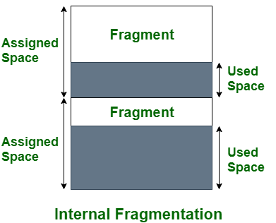
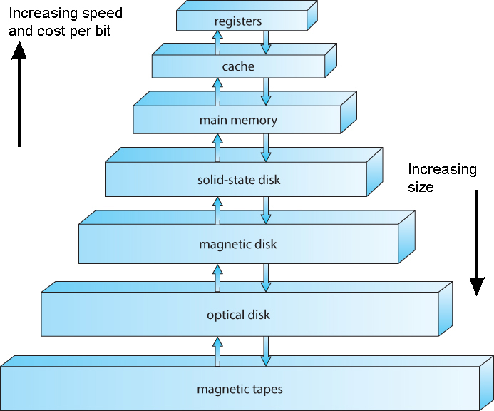
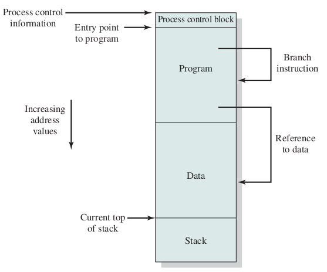
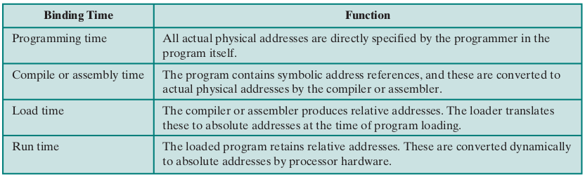
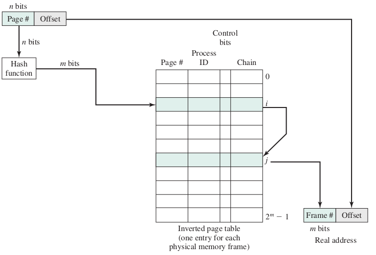
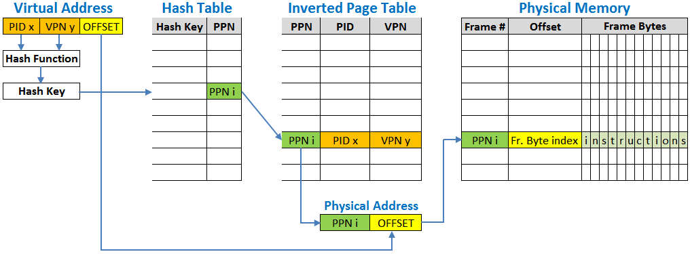
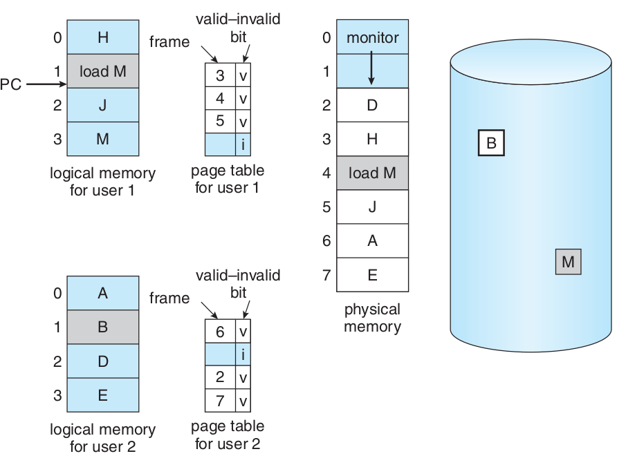
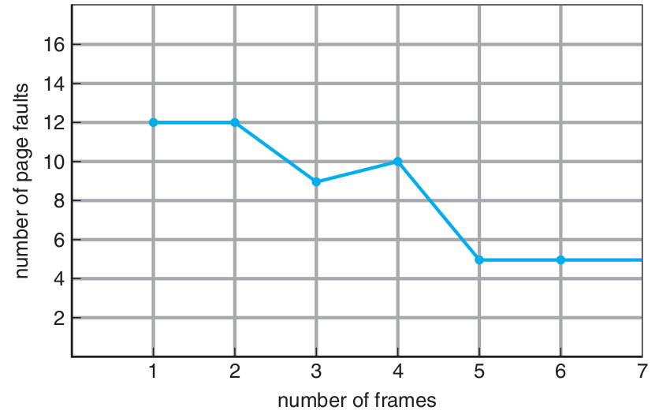
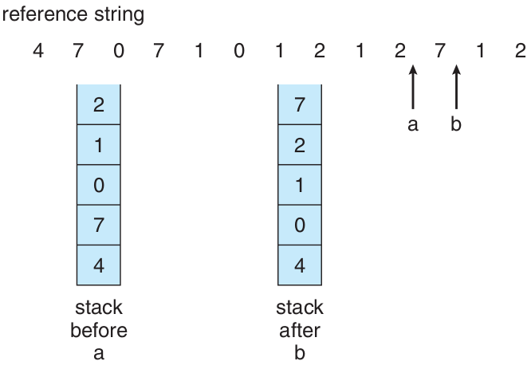

Operating Systems
Memory Management
Ahmad Yoosofan
University of Kashan
بخشبندی ثابت حافظه

تخصیص حافظه به فرآیندها در حالت بخشبندی ثابت حافظه

مشکلات بخشبندی ثابت
- انعطاف بسیار پایین
- محدودیت زیاد برای اندازهٔ فرایند در حالی که فضای حافظه خالی است.
- تکه تکه شدن یا پراکندی داخلی internal fragmentation
- هدر رفت حافظه
- بخشی از حافظه که به فرایند داده شده است فقط برای آن فرایند است.
- یعنی اگر بخشی از آن را فرایند به کار نبرد هدر رفته است.
تکه تکه شدن (پراکندگی) داخلی حافظه
Internal Memory Fragmentation
https://www.geeksforgeeks.org/difference-between-internal-and-external-fragmentation/
بخشبندی پویای حافظه

ارتباط میان آدرس فیزیکی و آدرس منطقی در آدرس دهی نسبی به کمکِ واحد مدیریت حافظه (MMU)

حافظهٔ فرآیندها در سیستم عامل CTSS

اثر به کارگیری حافظهٔ پویا

Process Control Block (PCB)


address binding, absolute and relocate loader

چگونگی کارکرد پیوند زدن تابعها از پروندههای گوناگون


Queue

برگزیدن فضای آزاد برای فرآیند تازه وارد
- اولین برازش(First Fit)
- بهترین برازش(Best Fit)
- بدترین برازش(Worst Fit)
- درپی برازش (برازش بعدی Next Fit)
تکه تکه شدن (پراکندگی یا پارگی) خارجی
External Fragmentation
Compaction

حافظهٔ پویای رفاقتی Buddy system


الگوریتم اجرا

جابجا کردن فرآیند میان حافظهٔاصلی و حافظهٔ جانبی (دیسک)، شکل سادهای از حافظهٔ مجازی


overlay


BIOS


Boot sequence


سلسله مراتب حافظه
سلسله مراتب حافظه جزئیتر

حافظهٔ نهان

حافظهٔ نهان دو سطحی در یک پردازندهٔ واقعی

الگوریتم خواندن و نوشتن از حافظهٔ نهان

Effective Access Time (EAT)
- \(t_m\) : زمان دسترسی به حافظهی اصلی
- \(t_c\) : زمان دسترسی به حافظهی نهان
- \(h_c\) : ضریب اصابت به حافظهی نهان
اگر ضریب اصابت (یا نسبت اصابت) برای پردازندهای 0.95 باشد و سرعت دسترسی به حافظهٔ اصلی 100 میکرو ثانیه باشد و سرعت دسترسی حافظهٔ نهان 1 میکرو ثانیه باشد در این صورت زمان دسترسی مؤثر برابر خواهد بود با
- EAT = 0.95 * 1 + (1 − 0.95) * (100 + 1)
- EAT = 0.95 + 0.05 * 101
- EAT = 0.95 + 5.05
- EAT = 5.1 μs

| ms | μs | ns | action |
| 0.5 | CPU L1 dCACHE reference | ||
| 1 | speed-of-light (a photon) travel a 1 ft (30.5cm) distance | ||
| 5 | CPU L1 iCACHE Branch mispredict | ||
| 7 | CPU L2 CACHE reference | ||
| 71 | CPU cross-QPI/NUMA best case on XEON E5-46 | ||
| 100 | MUTEX lock/unlock | ||
| 100 | own DDR MEMORY reference | ||
| 20 | 000 | Send 2K bytes over 1 Gbps NETWORK | |
| 250 | 000 | Read 1 MB sequentially from MEMORY | |
| 10 | 000 | 000 | DISK seek |
| 10 | 000 | 000 | Read 1 MB sequentially from NETWORK |
| 30 | 000 | 000 | Read 1 MB sequentially from DISK |
| 150 | 000 | 000 | Send a NETWORK packet CA -> Netherlands |
به کارگیری حافظهٔ نسبی برای نگهداری مکان چندین فرآیند در حافظه

حفاظت از حافظه به کمک ثباتهای پایه و حد

- System Call ?
- Change registers by the running process

بخشهای درونی یک فرآیند در حالت کلی
مشخص شدن آدرسهای حافظهٔ فرآیند


address binding, loader
address binding, linker

Software Interrupt
mov ah, 0x0e ; function number = 0Eh : Display Character mov al, '!' ; AL = code of character to display int 0x10 ; call INT 10h, BIOS video service


System Call

C System Call

Simple Parameters

Stack
- Process stack
- System stack
- kernel mode
- user mode
Pentium 4 (ESCR)


CPU protection
Timer interrupt
Cpu Scheduler


Micro Kernel

Multi Layer

DMA

حافظهٔ صفحهبندی شده
Paging
شکل سادهٔ صفحهبندی


- Number of bits of Addrress related to Maximum supported memory by this computer(cpu and motherboard)
- Number of bits of Addrress = log2(Maximum supported memory)
- If max supported memory = 32 words then number of bits needed for addrress ?
- 32 = 2 ^ 5, \(n = log_2(m)\) , m is number of bytes or words
- 5 = log2(32)
- if p = 2, d = 3 then the size of each frame or page is ?
- 2 ^ 3 = 8
- Maximum number of Frames?
- 2 ^ 2 = 4
بخشبندی ثبات آدرس در حافظهٔ صفحهبندی شده

- Frame 4k then number_bits(d) == 12
- Frame 1k then number_bits(d) == 10
- Frame 16k then number_bits(d) == 14
Maximux memory supported by cpu
- 1 MB ==> number_of_bit(Address register) == 20
- Frame 4k ==> d == 12 and p == 8
- Frame 1k ==> d == 10 and p == 10 // wrong?
Consider a computer with maximum 16 words
- Draw Memory Bytes
- d = 2
- Draw Memory Frames
- some First Frames for os
- Put a process into Memory (not continuous or in order)
- Fill page table
- Convert a Logical Addfress to Physical Address
- Put another process into Memory
0000 | 0001 | 0010 | 0011 | 0100 | 0101 | 0110 | 0111 | 1000 | 1001 | 1010 | 1011 | 1100 | 1101 | 1110 | 1111 |
|---|---|---|---|---|---|---|---|---|---|---|---|---|---|---|---|
0 | 1 | 2 | 3 | 4 | 5 | 6 | 7 | 8 | 9 | 10 | 11 | 12 | 13 | 14 | 15 |
.
00 | 01 | 10 | 11 |
|---|---|---|---|
0 | 1 | 2 | 3 |
.
00 | 01 | 10 | 11 |
|---|---|---|---|
4 | 5 | 6 | 7 |
.
00 | 01 | 10 | 11 |
|---|---|---|---|
8 | 9 | 10 | 11 |
.
00 | 01 | 10 | 11 |
|---|---|---|---|
12 | 13 | 14 | 15 |
یک کامپیوتر با حافظهٔ ۳۲ بایت و اندازههای قاب ۸ بایتی و یک فرآیند
d = 3, p = 2
p0 11 bytes
---
یک کامپیوتر با حافظهٔ ۱۲۸ بایتی و صفحههای ۸ بایتی
---

یک حافظهٔ ۳۲ بایتی با صفحههای ۴ بایتی

تغییرات فضاهای آزاد پیش و پس از تخصیص حافظه به یک فرآیند

تغییرات حافظه برای چند فرآیند

تبدیل آدرس منطقی به آدرس فیزیکی در حافظهٔ صفحهبندی شده


Address Translation
Process and Page Table


PTBR

حفاظت از حافظهٔ صفحهبندی شده

اشتراک گذاری در حافظهٔ صفحهبندی شده


Paging Memory Access

TLB

Flowchart of TLB miss

سلسه مراتب حافظه

Memory Access
Effective Access Time
- \(t_t\) (access Time of TLB) : زمان دسترسی به حافظهی نهان جدول صفحه
- \(t_c\) (access Time of Cache): زمان دسترسی به حافظهی نهان
- \(t_m\) (access Time of Memory): زمان دسترسی به حافظهی اصلی
- \(h_t\) (Hit ratio of TLB): ضریب اصابت به حافظهی نهان جدول صفحه
- \(h_c\) (Hit ratio of Cache): ضریب اصابت به حافظهی نهان
زمان دسترسی مؤثر را برای پردازندهای با حافظهٔ صفحهبندی شده حساب کنید اگر زمان دسترسی به حافظهٔ نهان جدول صفحه برابر ۱ نانو ثانیه باشد و زمان دسترسی به حافظهٔ نهان ۵ نانوثانیه باشد و زمان دسترسی به حافظه برابر ۱۰۰ نانوثانیه باشد و ضریب اصابت حافظهٔ نهان جدول صفحه برابر با ۹۵ درصد و ضریب اصابت به حافظهٔ نهان ۹۰ درصد باشد.
- \(t_t\) = 1, \(t_c\) = 5, \(t_m\) = 100, \(h_t\) = 0.95, \(h_c\) = 0.90
زمان دسترسی مؤثر = زمان دسترسی به جدول صفحه + زمان دسترسی به حافظه
با فرض برابر بودن نسبتهای اصابت و زمانهای یکسان برای دسترسی به حافظهٔ نهان و حافظهٔ TLB خواهیم داشت
Frame Size(I)
کوچک یا بزرگ بودن اندازهٔ صفحهها (همان قابهای حافظه) بر روی موضوعهای گوناگونی اثر دارد
1
- Max memory supported : 64 byte = 2 ^ 6
- frame size = page table 2 byte
- 2 ^ 6 / 2 ^1 = 2 ^ 5 = 32
- ?
2
- Max memory supported : 64 byte = 2 ^ 6
- frame size = page table 4 byte
- 2^6 / 2^2 = 2^4 = 16
- ?
3
- Max memory supported : 64 byte = 2 ^ 6
- frame size = page table 8 byte
- 2^6 / 2^3 = 2^3 = 8
- ? , Maximum Number of Processes
Frame Size(II)
1
- 32 bit address
- 1024 size of frame?
- 32 - 10 = 22
- 2^22 Frame
- 2^22 page table entry
- Problem ?
2
- 32 bit address
- 2^20 size of frame?
- 32 - 20 = 12
- 2^12 = 4096 Frame
- ? , Maximum Number of Processes
صفحهبندی دو سطحی

آدرسدهی در صفحهبندی دو سطحی


Page Translation for 4MB and 4KB Page Sizes
صفحهبندی دو سطحی ۶۴ بیتی

صفحهبندی سه سطحی ۶۴ بیتی

Linux Memory Mangement

صفحهبندی با جدول صفحهٔ معکوس

صفحهبندی با جدول صفحهٔ معکوس با تابع درهمسازی
Windows 10 Inverted Page Table on Intel Itanium 64 bit platform
Virtual Memory


Virtual Memory Addressing


Effective Access Time of Virtual Memory
- effective access time = (1 − p) × ma + p × page fault time.
- effective access time = (1 − p) × (200) + p (8 milliseconds) = (1 − p) × 200 + p × 8,000,000 = 200 + 7,999,800 × p
- 220 > 200 + 7,999,800 × p,
- 20 > 7,999,800 × p,
- p < 0.0000025
Allocation of frames
- On demand
- prepaging
روشهای تخصیص تعداد قاب به هر فرآیند
- مجموعهٔ مقیم برای هر فرآیند.
- تعداد ثابت fixed-allocation
- تعداد متغیر variable-allocation
- بخش کردن قابها میان فرآیندها
- تعداد برابر
- تعداد به نسبت اندازهٔ فرآیند
- چگونگی برگزیدن یک قاب برای تخصیص به یک فرآیند
- تخصیص محلی
- تخصیص سراسری
سیاستهای پاک کردن
- پاک کردن درخواستی demand cleaning
- پیش پاک کردن precleaning
Copy-on-Write

Page Replacement

Frame Allocation
- frame-allocation algorithm and a page-replacement algorithm.
- reference string.
- 0100, 0432, 0101, 0612, 0102, 0103, 0104, 0101, 0611, 0102, 0103, 0104, 0101, 0610, 0102, 0103, 0104, 0101, 0609, 0102, 0105
- At 100 bytes per page, this sequence is reduced to the following reference
- string:
- 1, 4, 1, 6, 1, 6, 1, 6, 1, 6, 1
- تعداد خطای نبود صفحه بسته به تعداد قابهای تخصیص داده شده

FIFO

Belady’s anomaly
Optimal

Not Recently Used Page(NRU)

NRU vs LRU
Least Recently Used(LRU)
How to Impolement LRU
- counters
- stacks
LFU
Least Frequently Used
MFU
Most Frequently Used
page-replacement algorithm is based on the argument that the page with the smallest count was probably just brought in and has yet to be used
Use of a stack to record the most recent page references
Second chance (clock)
Simplest implementation of NRU and LRU by using one bit
- access bit,
- reference bit, or
- use bit
Some called this NRU
- as an approximation to LRU, select one of the pages that has not been used recently (as opposed to identifying exactly which one has not been used for the longest amount of time)
- keep one bit called the "used bit" or "reference bit", where 1 => used recently and 0 => not used recently
- variants of this scheme are used in many operating systems, including UNIX and MacIntosh
- most variations use a scan pointer and go through the page frames one by one, in some order, looking for a page that has not been used recently.

Modefied Clock
Enhanced Second Chance
By the usage of
- modify bit or
- dirty bit
(modify bit, use bit)
- Form 1
- Search for (0, 0)
- Search for (1, 0) and access bit = 0
- goto 1
- Form 2
- Search for (0, 0)
- Search for (1, 0) and access bit = 0
- Search for (0, 0)
- Search for (1, 0)
PAGE BUFFERING
Thrashing

mov A, B
Principle of Locality(Locality of Reference)

Two kinds of locality
- Temporal locality: recently referenced items are likely to be referenced in near future
- Spatial locality: Items with nearby addresses tend to be referenced close together in time.
Locality example
- Program data
- Temporal: the variable sum
- Spatial: variable a[i+1] accessed soon after a[i]
- Instructions
- Temporal: cycle through the for-loop repeatedly
- Spatial: reference instructions in sequence
Locality Makes Caching Effective
- Cache
- Smaller, faster storage device that acts as a staging area
- … for a subset of the data in a larger, slower device
- Caching and the memory hierarchy
- Storage device at level k is a cache for level k+1
- Registers as cache of L1/L2 cache and main memory
- Main memory as a cache for the disk
- Disk as a cache of files from remote storage
- Locality of access is the key
- Most accesses satisfied by first few (faster) levels
- Very few accesses go to the last few (slower) levels
Working Set Model


روش شناسایی کوبیدگی به کمک فراوانی خطای نبود صفحه
page-fault frequency ( PFF )

روشهای رویارویی با کوبیدگی پس از شناسایی آن
- معلق کردن تعدادی فرآیند برگزیده شده
- نپذیرفتن فرآیند جدید
پروندههای نگاشت شده به حافظه (Memory-Mapped Files)

ورودی و خروجیهای نگاشت شده به حافظه
(I/O-Mapped Files)
- Graphic card
- Network
قفل کردن برخی صفحهها
Lock pages
اثر نوع برنامهنویسی و کامپایلر بر حافظهٔ مجازی
1 void work_with_array_row_by_row(void){ 2 double xa[1000][1000]; 3 int i,j; 4 for(i=0;i<1000;i++) 5 for(j=0;j<1000;j++) 6 xa[i][j]=i*1000+j; 7 }
1 void work_with_array_column_by_column(void){ 2 double xa[1000][1000]; 3 int i,j; 4 for(j=0;j<1000;j++) 5 for(i=0;i<1000;i++) 6 xa[i][j]=i*1000+j; 7 }
قطعهبندی (segmentation)


اشتراک گذاری در قطعهبندی
Sharing segments
ترکیب قطعهبندی و صفحهبندی
مانند صفحهبندی دو سطحی با این تفاوت که در سطح یکم قطعهبندی انجام میشود و در سطح دوم صفحهبندی انجام میشود.


ساختار حافظهٔ قطعهبندی شده در پردازندههای اینتل ۳۲ بیتی (IA32)


IA32 intel
- بیشترین حافظهای که میتواند پشتیبانی کند: 4GB
- بیشترین تعداد قطعه در یک فرآیند: 16KB
- بیشترین تعداد قطعهٔ اختصاصی برای یک فرآیند: 8KB برای دسترسی این بخش local descriptor table ( LDT ) به کار برده میشود.
- بیشترین تعداد قطعهٔ اشتراکی برای یک فرآیند با دیگر فرآیندها: 8KB برای دسترسی به این بخش global descriptor table ( GDT ) به کار برده میشود.
شمارهٔ قطعه | اختصاصی یا اشتراکی | حفاظت |
|---|---|---|
13 | 1 | 2 |
ساختار حافظهٔ صفحهبندی شده در پردازندههای اینتل ۳۲ بیتی (IA32)
جدولِ صفحهٔ یکم | جدولِ صفحهٔ دوم | جابجایی |
|---|---|---|
۱۰ | ۱۰ | ۱۲ |
جدولِ صفحه | جابجایی |
|---|---|
۱۰ | ۲۲ |


ساختار حافظه در پردازندههای «اِ اِم دی» ۶۴ بیتی (AMD64 یا x86_64 )

ساختار حافظه در پردازندههای «آرم» ۳۲ بیتی (ARM32)

References(I)
- https://stackoverflow.com/questions/18550370/calculate-the-effective-access-time
- http://os-book.com/
- https://en.wikipedia.org/wiki/Paging
- https://en.wikipedia.org/wiki/Page_(computer_memory)
- http://blog.cs.miami.edu/burt/2012/10/31/virtual-memory-pages-and-page-frames/
- https://www.tldp.org/LDP/tlk/mm/memory.html
- https://www.geeksforgeeks.org/operating-system-paging/
- https://samypesse.gitbooks.io/how-to-create-an-operating-system/Chapter-8/
- https://www.cse.iitb.ac.in/~mythili/teaching/cs347_autumn2016/notes/07-memory.pdf
- https://www.kernel.org/doc/html/latest/admin-guide/mm/index.html
- https://www.javatpoint.com/os-segmented-paging
- https://www.geeksforgeeks.org/difference-between-internal-and-external-fragmentation/
- https://web.fe.up.pt/~arestivo/presentation/os-memory/#15
- https://binaryterms.com/contiguous-memory-allocation-in-operating-system.html
- https://github.com/mor1/ia-operating-systems/wiki/06-Virtual-Addressing
- https://github.com/mor1/ia-operating-systems
- https://www.faceprep.in/operating-systems/operating-systems-fragmentation-and-compaction/
- https://slideplayer.com/slide/7084682/
References(II)
- https://www.cs.uic.edu/~jbell/CourseNotes/OperatingSystems/images/Chapter1/1_4_StorageDeviceHierarchy.jpg
- http://images.bit-tech.net/content_images/2007/11/the_secrets_of_pc_memory_part_1/hei.png
- https://answers.microsoft.com/en-us/windows/forum/windows_10-performance/physical-and-virtual-memory-in-windows-10/e36fb5bc-9ac8-49af-951c-e7d39b979938
- https://upload.wikimedia.org/wikipedia/commons/c/c2/Write-back_with_write-allocation.svg
- https://en.wikipedia.org/wiki/Cache_(computing)
- https://www.byclb.com/TR/Tutorials/dsp_advanced/ch1_1_dosyalar/image025.jpg
- https://en.wikipedia.org/wiki/File:Cache,hierarchy-example.svg
- https://en.wikipedia.org/wiki/CPU_cache
- https://tutorialspoint.dev/computer-science/operating-systems/operating-systems-segmentation
- https://tutorialspoint.dev/image/segmentation.png
- https://tutorialspoint.dev/image/Translation.png
- https://www.cs.princeton.edu/courses/archive/spr11/cos217/lectures/18MemoryMgmt.pdf
- http://harmanani.github.io/classes/csc320/Notes/ch05.pdf
- https://www.cs.princeton.edu/courses/archive/spr11/cos217/lectures/18MemoryMgmt.pdf
- http://harmanani.github.io/classes/csc320/Notes/ch05.pdf
- https://www.mvorganizing.org/what-is-principle-of-locality-in-operating-system/
- https://en.wikipedia.org/wiki/Locality_of_reference
- http://www2.cs.uregina.ca/~hamilton/courses/330/notes/memory/page_replacement.html
- https://prepinsta.com/operating-systems/page-replacement-algorithms/least-recently-used-lru-algorithm/
{kind=link}
{kind=link}
{kind=link}
{kind=link}
{kind=link}
{kind=link}
{kind=link}
References(III)
- https://examradar.com/nru-not-recently-used-page-replacement-algorithm-questions-answers/
- https://www.cpp.edu/~gsyoung/CS4310/Notes/Part2MemoryManagement.pdf
- https://japp.io/algorithms/page-replacement/lfu-page-replacement-algorithm-program-in-c-c/
- https://answers.microsoft.com/en-us/windows/forum/all/physical-and-virtual-memory-in-windows-10/e36fb5bc-9ac8-49af-951c-e7d39b979938
- https://answers.microsoft.com/en-us/windows/forum/windows_10-performance/physical-and-virtual-memory-in-windows-10/e36fb5bc-9ac8-49af-951c-e7d39b979938
- https://www.geeksforgeeks.org/inverted-page-table-in-operating-system/
- https://www.kernel.org/doc/gorman/html/understand/understand006.html
- https://www.kernel.org/doc/gorman/html/understand/understand-html006.png
- https://www.kernel.org/doc/
- https://www.kernel.org/doc/html/latest/admin-guide/mm/pagemap.html
- https://www.kernel.org/doc/html/latest/vm/hmm.html
- https://connormcgarr.github.io/paging/
- https://www.amd.com/system/files/TechDocs/24593.pdf
- http://www.rcollins.org/ddj/May96/
- https://www.gatevidyalay.com/wp-content/uploads/2018/11/Translating-Logical-Address-into-Physical-Address-Diagram-Paging-using-TLB-1.png
- https://www.gatevidyalay.com/translation-lookaside-buffer-tlb-paging/
- https://www.gatevidyalay.com/wp-content/uploads/2018/11/Translating-Logical-Address-into-Physical-Address-Diagram-Paging-using-TLB-1.png
{kind=link}
{kind=link}
References(IV)
- https://www.gatevidyalay.com/translation-lookaside-buffer-tlb-paging/
- https://www.amazon.com/ASUS-DDR3-Intel-Motherboard-H61M/dp/B00BN36V4W
- https://www.asus.com/Motherboards-Components/Motherboards/Workstation/P10S-WS/
- https://commons.wikimedia.org/wiki/File:Intel_D945GCCR_Socket_775.png
- https://witscad.com/course/computer-architecture/chapter/dma-controller-and-io-processor
- http://www.embeddedlinux.org.cn/rtconforembsys/5107final/images/1103_0.jpg
- http://www.embeddedlinux.org.cn/rtconforembsys/5107final/LiB0069.html
- https://www.uou.ac.in/lecturenotes/computer-science/BCA-17/Computer%20Organization%20Part%202.pdf
- https://www.pvpsiddhartha.ac.in/dep_it/lecturenotes/CSA/unit-5.pdf
- https://toshiba.semicon-storage.com/us/semiconductor/knowledge/e-learning/micro-intro/chapter4/interrupt-processing-types-interrupts.html
- https://stackoverflow.com/questions/4087280/approximate-cost-to-access-various-caches-and-main-memory#4087315
- https://codex.cs.yale.edu/avi/os-book/
{kind=link}
{kind=link}